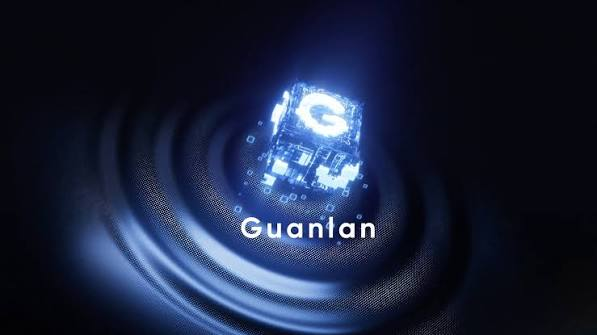
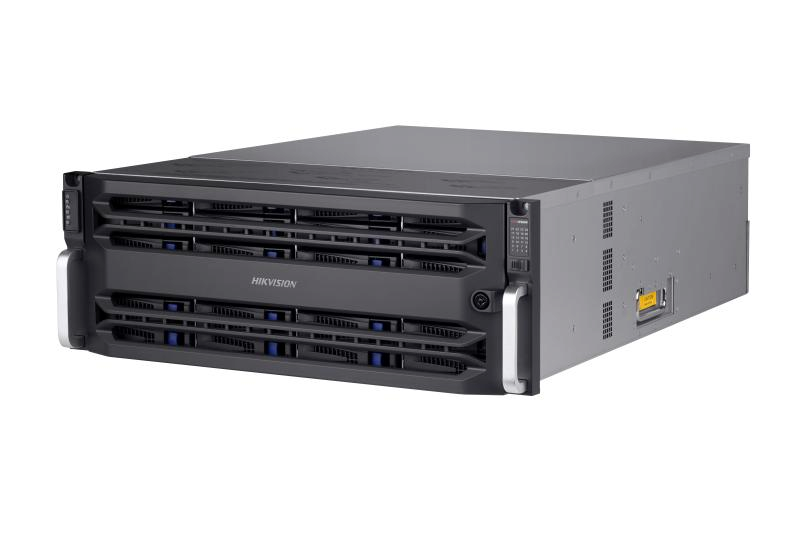

Search the way people remember.
Describe the target, action, colour or location in everyday language. You do not need the exact camera or timestamp first.
AcuSeek lets your team describe what happened in plain language, find the right footage in seconds, and act on a clearer picture.
Powered by Guanlan multimodal AI, with natural-language search and cross-scene tracking across supported NVR, web and mobile platforms.
When an incident spans people, vehicles and multiple cameras, the cost of searching is measured in delayed decisions. AcuSeek turns a vague memory into a focused investigation.
Describe the target, action, colour or location in everyday language. You do not need the exact camera or timestamp first.
AI connects the words in your request to visual evidence, reducing hours of manual scrubbing to a short list of relevant moments.
Once you have a match, trace the same person or vehicle between camera zones to build a more complete, defensible timeline.
Guanlan AI gives AcuSeek the context to connect language and video. Two focused engines then help your team move from discovery to understanding.
Guanlan is HIKVISION’s large multimodal model. It bridges what an operator says with what cameras see, so a request such as “person in a red jacket near the west gate” becomes a practical starting point for investigation.
Read the AcuSeek overview ↗
Use text or voice to find people, vehicles, colours, actions and places across supported cameras.
Select a match and follow that target across scenes to reconstruct movement and context.
Try the kind of request an operator can make when the clock and camera are still unknown.
09:18 · 09:31 · 09:46
08:57 · 09:04
Complete timeline
Illustrative workflow. Product features and results depend on the selected NVR, cameras, firmware and platform.
From a compact site to a distributed enterprise, each tier is designed to make investigation more capable without making the experience more complicated.
Homes, shops and growing offices

Commercial sites and campuses

Complex sites and high-value assets

Large, distributed operations
Use your location, daily activity and growth plans to narrow the range. A specialist can validate the final channel, camera and storage configuration.
Start with K / VPro when you need reliable search across a focused set of cameras and a simple day-to-day workflow.
Best starting point · 4–16 camerasChoose I / VPro when several people investigate incidents and you need faster search across more zones throughout the day.
Balanced fit · 16–64 camerasPrioritise cross-scene visibility and target variety. DeepinMind Pro suits environments where movement, vehicles and perimeters matter.
Deeper context · complex scenesFor a high daily volume of investigations and many connected cameras, Fusion Server Ultra gives the operation room to grow.
Enterprise scale · up to 256 channelsExact features vary by model, firmware, cameras and platform. These answers are a useful starting point.
Bring your site details to a HIKVISION specialist and choose the AcuSeek configuration that gives your team faster answers without compromising the bigger picture.